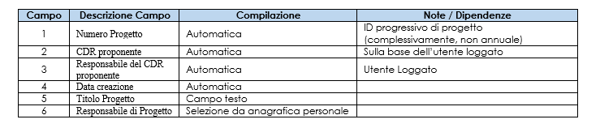
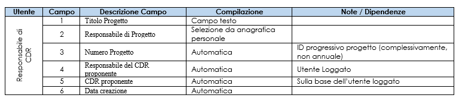
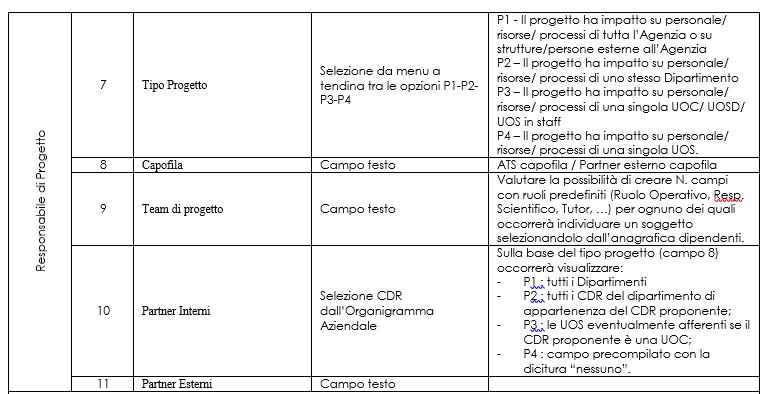
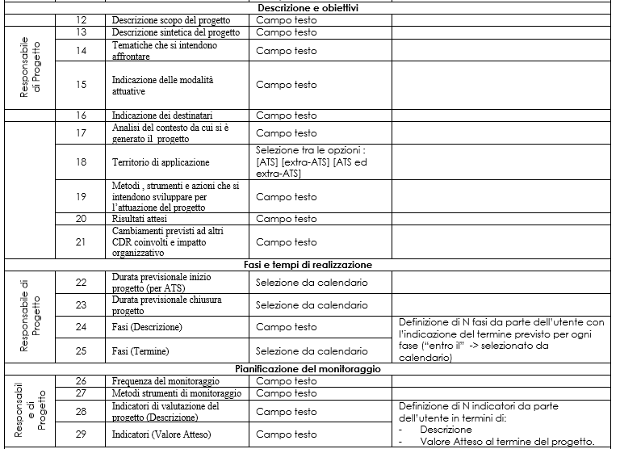
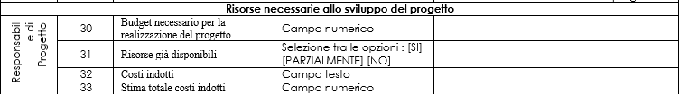
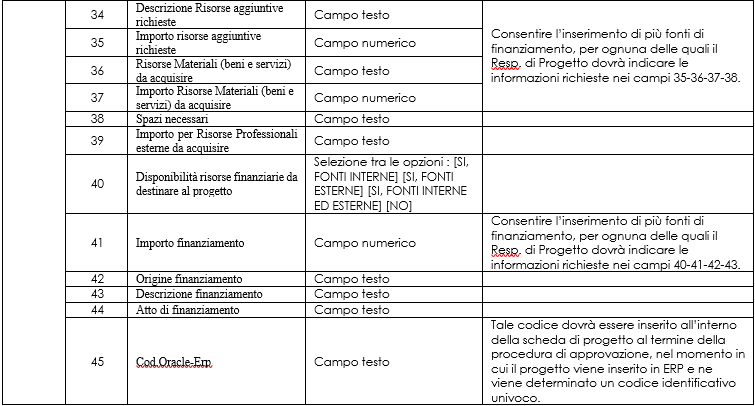
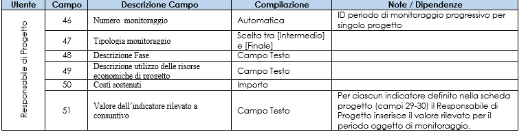
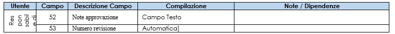

Man Tecnico:Progetti
Analisi dei requisiti
La Strategia Aziendale, declinata a livello dipartimentale, si attua attraverso gli obiettivi assegnati ai CDR e nella definizione e realizzazione di specifiche iniziative progettuali. La piattaforma di programmazione e controllo consente mediante lo specifico modulo “Scheda Progetti” l’attuazione informatizzata della stesura del progetto da parte del Responsabile di Progetto individuato a livello aziendale, i ruoli delle diverse categorie di soggetti coinvolti, le fasi ed i requisiti funzionali.
I tipi di progetto previsti sono differenti e nella fattispecie
- P1: il progetto ha impatto su personale/ risorse/ processi di tutta l'Agenzia o su strutture/ persone esterne all'Agenzia;
- P2: il progetto ha impatto su personale/ risorse/ processi di uno stesso Dipartimento;
- P3: il progetto ha impatto su personale/ risorse/ processi di una singola UOC/ UOSD/ UOS in staff;
- P4: il progetto ha impatto su personale/ risorse/ processi di una singola UOS.
Di seguito sono approfondite le fasi principali:
1. Il Responsabile di CDR crea il nuovo Progetto all’interno della scheda “Progetti”, indicandone il titolo ed il Responsabile di Progetto.
2. Il Responsabile di Progetto indicato alla fase 1 accede alla scheda “Progetti” e provvede alla compilazione della “Scheda Progetto” secondo il format proposto dalla scheda ed individua il Direttore di Riferimento che dovrà validare l'iniziativa progettuale.
3. I contenuti vengono approvati dal Responsabile di Riferimento
4. Attuazione del progetto.
5. Il Responsabile di Progetto effettua la rendicontazione intermedia secondo le tempistiche di monitoraggio previste dal piano di progetto.
6. Nel caso di modifiche sostanziali al progetto, il Responsabile di Progetto propone le modifiche dei contenuti all’interno della “Scheda Progetto” (compilata in fase 2) generandone una nuova versione che dovrà essere nuovamente approvata dal Responsabile di Riferimento (come riportato al punto 3).
7. Al Termine del Progetto il Responsabile di Progetto redige una valutazione conclusiva dell’iniziativa progettuale mediante il format proposto dalla Scheda.
8. Il Responsabile di riferimento (di cui al punto 3) effettua la validazione finale del progetto approvando la valutazione conclusiva di cui al punto precedente.
Descrizione delle funzionalità
La Scheda “Progetti” sarà accessibile da tutti i Responsabili di CDR ed eventualmente anche dai singoli utenti (non Responsabili di CDR) sulla base del ruolo ricoperto e della fase del progetto. Accedendo alla scheda di budget, l’utente abilitato troverà la sezione “Progetti” nella barra dei menu a sinistra.
Gli utenti che accedono alla scheda “Progetti” avranno privilegi specifici sulla base del ruolo ricoperto all’interno delle fasi descritte in precedenza. Oltre a coloro coinvolti nelle diverse fasi, occorre prevedere una sezione “amministratore CDG” atta a gestire le tabelle di supporto della scheda ed estrazioni di dettaglio dei contenuti inseriti.
Utenti coinvolti nel processo:
- Il Responsabile di CDR
Il Responsabile di CDR accedendo alla Scheda “Progetti” potrà nello specifico:
a. inserire un nuovo progetto indicando il “Titolo” ed il “Responsabile del Progetto” (che sarà un dipendente della ATS da selezionare a partire dall’anagrafica dipendenti);
b. consultare in ogni momento i progetti inseriti, tra cui le informazioni inserite dal “Responsabile del Progetto”; lo stato del progetto; le rendicontazioni intermedie inserite dal “Responsabile del Progetto”;
c. approvare o meno i contenuti dei progetti di tipologia P3-P4.

- Il Responsabile di Progetto
Il Responsabile di Progetto, individuato dal Responsabile di CDR in fase di creazione del nuovo Progetto, accedendo alla scheda di budget visualizzerà la scheda “Progetti” e potrà:
a. compilare la “Scheda di Progetto” per il progetto di cui risulta responsabile (come definita nella scheda sottostante) e modificarne i contenuti prima dell’invio al Responsabile dell’approvazione (Direttore di Riferimento);
b. inserire il codice univoco ERP assegnato al progetto in seguito alla sua approvazione;
c. compilare le rendicontazioni intermedie e finali del Progetto;
d. proporre una nuova versione del progetto modificando i contenuti della “Scheda di Progetto” (in caso di "non approvazione" da parte del Direttore di Riferimento");
e. consultare in ogni momento il dettaglio dei progetti attivi di cui risulta responsabile.





Il Responsabile di Progetto all’interno della scheda “Progetti” potrà provvedere alla creazione di uno o più monitoraggi intermedi ed un unico monitoraggio finale, nel rispetto di quanto definito all’interno della scheda progetti in termini di “Pianificazione del monitoraggio” (frequenza, indicatori di misurazione previsti, …).

- Il Direttore di Riferimento
Il Direttore di Riferimento è l’utente che effettua l’approvazione dell’iniziativa progettuale proposta e delle eventuali successive revisioni e viene individuato dal Responsabile di progetto (a livello aziendale sulla base della tipologia di progetto il Direttore di Riferimento sarà individuato come segue: se P1 il Direttore Strategico di Riferimento del CDR proponente (Gerarchia POAS); se P2 il Direttore di Dipartimento; se P3/P4 il Responsabile del CDR proponente). Il Direttore di Riferimento individuato effettua l’approvazione del Progetto e della rendicontazione “finale” così come compilata dal Responsabile di Progetto.

- Amministratore CDG
L’utente “Amministratore CDG” dovrà:
a. poter accedere (attraverso selezione dell’utente) a tutte le sezioni in uso per ciascuno degli utenti della scheda e poter modificare i contenuti inseriti da ciascun utente;
b. visualizzare un riepilogo complessivo dei progetti inseriti;
c. modificare/aggiungere/eliminare le tabelle utilizzate per la creazione dei menu a tendina disponibili all’interno delle diverse sezioni della scheda;
d. modificare/aggiungere/eliminare la tabella di collegamento tra Tipo Progetto (ovvero se P1; P2; P3; P4) e il Responsabile di Riferimento;
e. modificare le date di chiusura/avvio delle diverse fasi della singola proposta di progetto al fine di consentire la revisione della proposta o dell’approvazione.
Scelte implementative
Tutte le funzionalità vengono implementate con gli oggetti standard del framework, Grid e Record. Tutte le entità collegate al progetto verranno gestite all’interno del Record progetto come Grid collegate ai Record per le singole entità.
I Direttori di Riferimento sono impostati nella tabella del database “progetti_direzione_riferimento_anno” in cui, per ogni anno di budget, bisogna indicare il codice CdR di ogni direttore di riferimento.
Modello ER
progetti_monitoraggio (ID, ID_progetto, numero_monitoraggio, ID_tipologia_monitoraggio, descrizione_fase, costi_sostenuti, descrizione_utilizzo_risorse, note_rispetto_risorse_previste, note_rispetto_tempistiche, note_replicabilita_progetto)
progetti_monitoraggio_indicatore (ID, ID_monitoraggio, ID_indicatore, valore)
progetti_progetto (ID, matricola_utente_creazione, codice_cdr_proponente, data_creazione, titolo_progetto, matricola_responsabile_progetto, ID_tipo_progetto, ID_file, ID_risorse_finanziarie_disponibili, capofila, team_progetto, partner_esterni, descrizione_progetto, tema_progetto, modalita_progetto, target_progetto, setting, obiettivo_generale_progetto, analisi_contesto_progetto, ID_territorio_applicazione, metodi_progetto, risultati_attesi_progetto, cambiamenti_altri_enti, frequenza_monitoraggio, metodo_monitoraggio, budget, risorse_gia_disponibili, descrizione_risorse_aggiuntive, importo_risorse_aggiuntive, ricadute_altri_cdr, costi_indotti, importo_totale_costi_indotti, materiali, importo_materiali, spazi, risorse_professionali_coinvolte, importo_risorse_professionali_coinvolte, altro, importo_altro, oracle_erp, data_inizio_progetto, data_fine_progetto, data_approvazione, matricola_responsabile_riferimento_approvazione, stato, note, numero_revisione, validazione_finale, note_validazione_finale, data_validazione_finale)
progetti_progetto_fase_tempo_realizzazione (ID, ID_progetto, data_inizio_fase, data_fine_fase, descrizione_fase)
progetti_progetto_finanziamento (ID, ID_progetto, importo, origine, descrizione, atto, cofinanziamento)
progetti_progetto_indicatore (ID, ID_progetto, descrizione, valore_atteso)
progetti_progetto_partner_interni (ID, ID_progetto, codice_cdr)
progetti_risorse_finanziarie_disponibili (ID, descrizione)
progetti_territorio_applicazione (ID, descrizione)
progetti_tipo_progetto (ID, codice, descrizione)
progetti_tipologia_monitoraggio (ID, descrizione)
Modello Classi
class ProgettiMonitoraggio extends Entity
Rappresenta un monitoraggio del progetto.
- Attributi
:*protected static $tablename = "progetti_monitoraggio";
- Metodi
:*public static function getNextNumeroMonitoraggio($id_progetto) ::Restituisce il progressivo del monitoraggio per il progetto passato come parametro. :*public static function isUnicoMonitoraggioFinale($filters = array()) ::Restituisce true se il monitoraggio è l'unico definito come finale. :*public static function lastInsertedID($filters = array()) ::Restituisce l'id dell'ultimo monitoraggio inserito.
class ProgettiMonitoraggioIndicatore extends Entity
Rappresenta un indicatore utilizzato per un monitoraggio del progetto.
- Attributi
:*protected static $tablename = "progetti_monitoraggio_indicatore";
- Metodi
:*public static function factoryFromMonitoraggio($id_monitoraggio) ::Restituisce un array di oggetti ProgettiMonitoraggioIndicatore rappresentante gli indicatori previsti per il monitoraggio passato come parametro. :*public static function factoryFromMonitoraggioIndicatore($id_monitoraggio, $id_indicatore) ::Costruttore da parametri differenti da ID. Viene istanziato un oggetto del tipo della classe utilzzando i parametri passati per identificare univocamente il record. :*public static function deleteRecord($filters = array()) ::Eliminazione dei record della tabella "progetti_monitoraggio_indicatore" corrispondenti alle condizioni passate come parametro.
class ProgettiProgetto extends Entity
Rappresenta un progetto.
- Attributi
:*protected static $tablename = "progetti_progetto";
- Metodi
:*public static function viewMenuByMatricola($user_matricola) ::Restituisce true se l'utente con matricola passata come parametro ha il privilegio di visualizzazione sui progetti (almeno un progetto in cui compare come creatore, referente, approvatore). :*public function getDescrizioneStato() ::Restituisce la descrizione dello stato di avanzamento del progetto :*public function save() ::Viene salvato a db nella tabella "progetti_progetto" il record corrispondente all'oggetto. Gli attributi vengono salvati come valori dei campi corrispondenti. Vengono considerati i campi oracle_erp, note, stato, data_approvazione, numero_revisione, time_modifica, record_attivo :*public function saveChiudiProgetto() ::Viene salvato a db nella tabella "progetti_progetto" il record corrispondente all'oggetto. Gli attributi vengono salvati come valori dei campi corrispondenti. Vengono considerati i campi stato, time_modifica, record_attivo :*public function saveValidazioneFinale() ::''Viene salvato a db nella tabella "progetti_progetto" il record corrispondente all'oggetto. Gli attributi vengono salvati come valori dei campi corrispondenti. Vengono considerati i campi stato, validazione_finale, note_validazione_finale, data_validazione_finale, time_modifica, record_attivo
class ProgettiProgettoFaseTempoRealizzazione extends Entity
Rappresenta una fase per la realizzazione del progetto.
- Attributi
:*protected static $tablename = "progetti_progetto_fase_tempo_realizzazione";
class ProgettiProgettoFinanziamento extends Entity
Rappresenta una finanziamento per il progetto.
- Attributi
:*protected static $tablename = "progetti_progetto_finanziamento";
class ProgettiProgettoIndicatore extends Entity
Rappresenta un indicatore per il progetto.
- Attributi
:*protected static $tablename = "progetti_progetto_indicatore";
- Metodi
:*public static function factoryIndicatoriNonConsuntivatiByProgettoMonitoraggio($id_progetto, $id_monitoraggio) ::Costruttore da parametri differenti da ID. Viene istanziato un oggetto del tipo della classe utilzzando i parametri passati per identificare univocamente il record. :*public static function getNumeroTotaleIndicatori($id_progetto) ::Restituisce il numero di indicatori definiti per un progetto. :*public static function getNumeroTotaleIndicatoriNonConsuntivati($id_progetto, $id_monitoraggio) ::Restituisce il numero di indicatori definiti per un progetto e non consuntivati.
class ProgettiProgettoPartnerInterni extends Entity
Rappresenta un partner interno per il progetto.
- Attributi
:* protected static $tablename = "progetti_progetto_partner_interni"
class ProgettiRisorseFinanziarieDisponibili extends Entity
Rappresenta una risorsa finanziaria disponibile.
- Attributi
:*protected static $tablename = "progetti_risorse_finanziarie_disponibili";
- Metodi
:*public function canDelete() ::Viene verificato che il record del DB corrispondente all'oggetto istanziato sia eliminabile.
class ProgettiTerritorioApplicazione extends Entity
Rappresenta un territorio d'applicazione per i progetti.
- Attributi
:*protected static $tablename = "progetti_territorio_applicazione";
- Metodi
:*public function canDelete() ::Viene verificato che il record del DB corrispondente all'oggetto istanziato sia eliminabile.
class ProgettiTipoProgetto extends Entity
Rappresenta una tipologia di progetto.
- Attributi
- Metodi
:*protected static $tablename = "progetti_tipo_progetto";
:*public function canDelete() ::Viene verificato che il record del DB corrispondente all'oggetto istanziato sia eliminabile.
class ProgettiTipologiaMonitoraggio extends Entity
Rappresenta una tipologia di monitoraggio.
- Attributi
:*protected static $tablename = "progetti_tipologia_monitoraggio";
- Metodi
:*public function canDelete() ::Viene verificato che il record del DB corrispondente all'oggetto istanziato sia eliminabile.